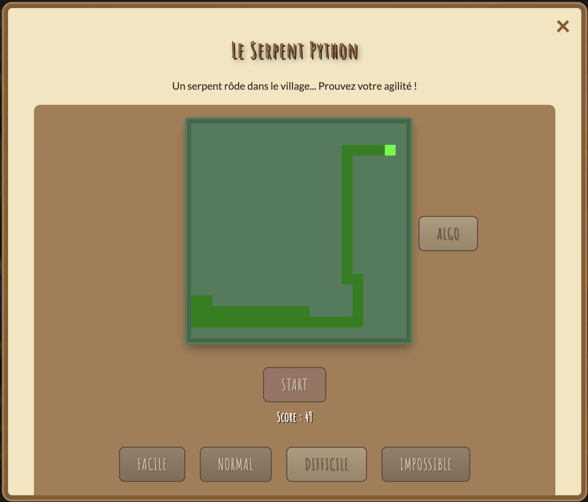

Nuit de l'Info 2025
Défi Web & Algorithmique (NIRD)
Contexte : Numérique Responsable
La Nuit de l'Info est une compétition nationale où des équipes d'étudiants doivent développer une application web en une nuit. L'édition 2025 portait sur la démarche NIRD (Numérique Inclusif, Responsable et Durable).
L'objectif global était de créer une application ludique et éducative pour sensibiliser le public à l'indépendance technologique et aux alternatives durables.

Visualisation de l'algorithme autonome jouant au Snake.
Mon Défi : L'Algorithme du Snake
Le Challenge
Le défi consistait à "Cacher un snake dans le site web". Pour le rendre original, j'ai décidé de ne pas simplement faire un jeu pour l'utilisateur, mais de créer une IA qui joue toute seule.
Implémentation
- Développement du moteur du jeu Snake en JavaScript.
- Conception de l'algorithme de prise de décision (Pathfinding).
- Intégration de modes de difficulté variés.
Contribution Technique
Mon travail s'est concentré sur la logique algorithmique et l'intégration web :
Algorithmique
- Pathfinding : Création d'une logique permettant au serpent de trouver la pomme tout en évitant sa queue et les murs.
- Optimisation : Calcul en temps réel à chaque frame pour une fluidité maximale.
Web Development
- Canvas API : Rendu graphique du jeu dans un élément HTML5 logé dans le site.
- Intégration : Communication avec le reste du site (Easter Egg caché).
Voir le projet en live : Accéder au site NDI
Compétences Acquises
- Développement d'algorithmes de jeu en temps réel.
- Création d'Easter Eggs et de contenus interactifs cachés.
- Travail en équipe sur un thème engagé (Numérique Responsable).
- Gestion du sommeil et de la productivité nocturne !